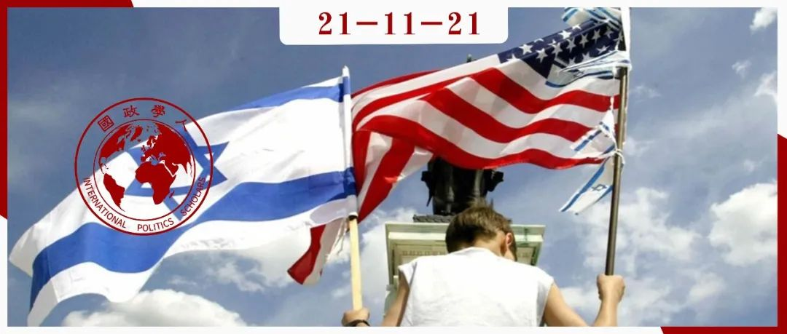
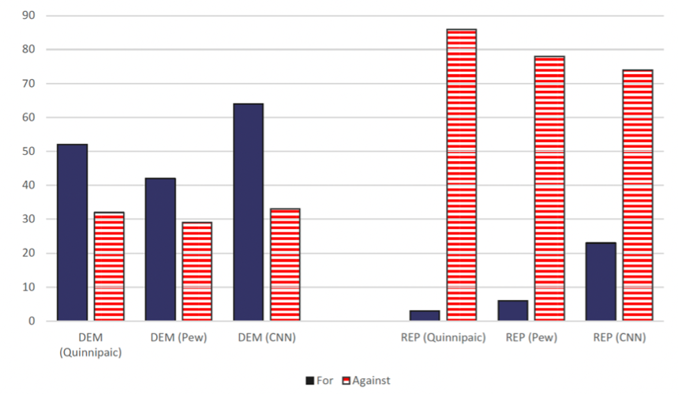
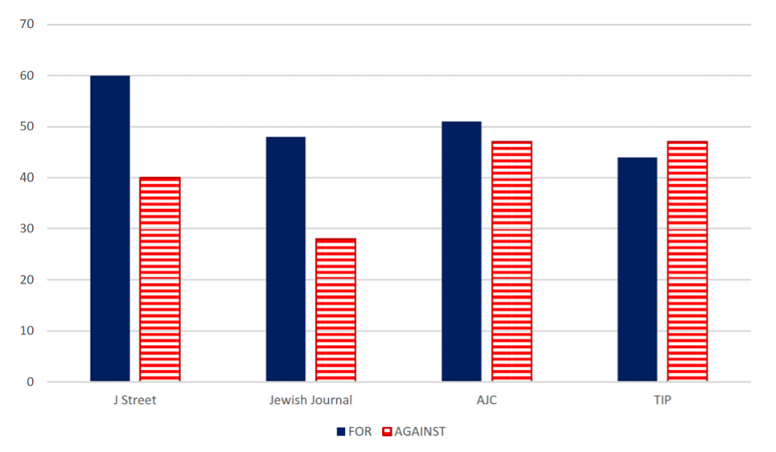
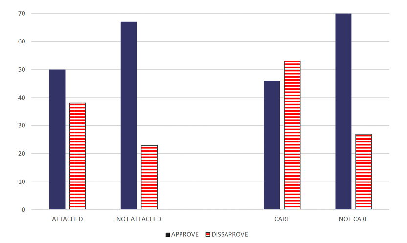
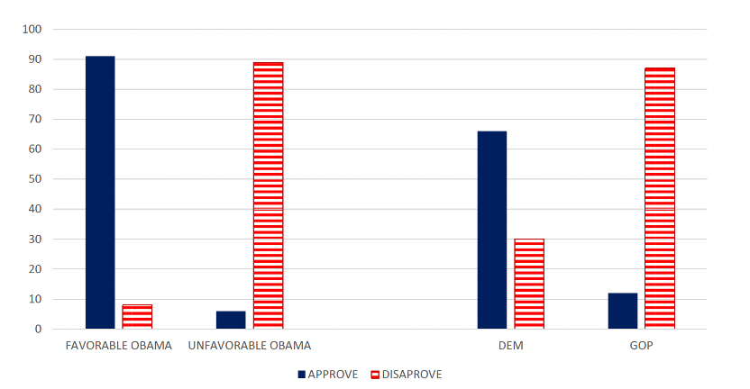

收录于合集

作品简介
作者： Jonathan Rynhold，以色列巴伊兰大学政治学系教授，主要研究美以关系、和平进程以及政治文化在外交政策中的作用。
编译： 何诗雨（国政学人编译员，武汉大学外交学）
来源： Rynhold J. Divide and Rule: Discursive Authority, Identity Dissonance, Ethnic Lobbies, and US Foreign Policy, or How President Obama Defeated AIPAC over the 2015 Iran Deal[J]. Foreign Policy Analysis , 2021, 17(2): orab005.
归档： 《国际关系前沿》2021年第11期，总第38期。

内容摘要
本文通过分析作为典型游说团体的美以公共事务委员会阻止2015年伊朗协议的失败，来探讨侨民游说团体对美国外交政策的影响。不同于已有研究关注侨民游说团体的结构性物质因素，本研究引入以代理结构为导向的建构主义路径，它关注的是观念因素，认为物质因素需要和观念因素结合起来，才能充分解释美以公共事务委员会的失败。作者进而提出“文化机会结构”(cultural opportunity structure)、“话语权威”(discursive authority)和“身份失调”(identity dissonance)三个核心概念，对2015年伊朗协议进行案例分析。本文对侨民游说团体对美国外交政策影响的研究具有重要意义。
文章导读
01
引言
侨民游说团体在美国外交政策方面拥有多少权力？他们改变美国外交政策的能力受哪些因素影响？这是相关研究的核心问题。
美以公共事务委员会(American Israel Public Affairs Committee, 简称AIPAC)被公认为美国最强大和最重要的亲以色列组织，其建立基础是美国犹太社区对以色列的长期支持。2015年，美以公共事务委员会在伊朗协议——《联合全面行动计划》（Joint Comprehensive Plan of Action ，简称JCPOA)问题上与奥巴马政府对峙。对于美国和美以公共事务委员会双方来说，该问题涉及重大利益：该协议是奥巴马总统任期内的标志性外交政策，而美以公共事务委员会则在反对伊朗协议活动中投入了大量资金。最终，美以公共事务委员会未能成功阻止伊朗协议的达成。鉴于那些认为侨民游说团体非常强大的人总将美以公共事务委员会作为典范，因此理解其在伊朗协议问题上的失败具有重要意义，而这涉及到侨民团体在影响美国外交政策方面为什么会成功或失败。
不同于大多数文献关注结构性物质因素， 作者引入一种以代理机构为导向的建构主义方法，认为观念因素是至关重要的。因此，本文使用三个概念来解释美以公共事务委员会的失败：文化机会结构(cultural opportunity structure)、话语权威(discursive authority)和身份失调(identity dissonance)，物质因素必须与这些观念因素相结合，才能充分解释美以公共事务委员会的失败。
02
侨民游说团体与美国外交政策
关于侨民游说团体对美国外交政策的影响力， 一直存在激烈不休的争论：一方认为亲以色列游说团体的力量被大大高估了，美国外交政策是由其他因素驱动的，如文化倾向或主要由美国总统决定的美国战略利益。另一方则认为亲以色列游说团体对美国外交政策有重大影响。
已有研究成果认为：首先，侨民游说团体获得政治影响需要一定的前提条件。 游说团体需要侨民社区表现出“政治化的种族认同”，迫使其“采取集体行动以实现群体内部目标”。 其次，关于侨民游说团体对美国外交政策的影响关键在于物质因素， 如财政资源、支持者数量、组织力量、社会网络、外部盟友，以及游说团体运作的背景物质限制等。 第三，在某些特定情况中游说团体更可能成功影响美国外交政策。 例如，当游说团体的立场与总统的政策吻合时；当议题主要是经济问题时；当总统制支持率低于50%等。 最后，具体到亲以色列游说团体， 当国会认为政府政策威胁到以色列安全时，亲以色列游说团体会更有影响力。
03
侨民游说的文献与2015年伊朗协议
以下将针对美以公共事务委员会阻止伊朗协议这一事件，对上文提及的影响因素进行评估， 这其中许多因素本应是美以公共事务委员会的优势，但它并未发挥作用。第一，政府处于分裂状态。第二，亲以色列游说团体寻求维持现状，而政府试图改变现状。第三，美国总体外交政策与美国在某一具体问题方面的国家利益未达成共识。第四，在整个2014年和2015年，奥巴马总统支持率低于50%。第五，伊朗核问题直接威胁到以色列和美国的安全。
不过，文献中提到的另外两个因素确实有助于政府的胜利——制度环境和犹太社区的分裂。在制度环境方面， 行政部门一开始就具有优势，因为所涉及的议题主要是外交和安全问题，且宪法规定总统是外交总司令并负责开展外交活动。 但是，体制上的障碍并不是不可逾越的， 主要在于： 一是有2010年的先例，在P5+1（美国、英国、法国、中国、俄国和德国）和伊朗的谈判过程中，美以公共事务委员会全力支持制裁立法，该立法在参众两院以大比例否决权通过。二是自我认同的民主党人在该协议的分歧远大于共和党人（图1），这可以为国会民主党人提供反对该协议的合法性，而不会显得不忠诚。三是政府在2015年没有采取行动的依据是，否决权所带来的制度优势将足以赢得胜利。
在侨民的组织分歧方面。 在犹太社区内，美以公共事务委员会拥有组织良好的优势，即大量成员和预算，并在社区外有很多盟友。然而，美以公共事务委员会在犹太社区内部面临由犹太街(J Street)为领导的其他组织的一致反对，这在很大程度上抵消了这些优势。尽管如此，社区内存在凝聚力强的反对派还是值得重视的， 不是因为其物质资源，而是因为他们破坏了美以公共事务委员会及其盟友代表社区共识的能力。 换句话说，重要的不是组织是否团结的事实，而是话语权威的丧失。

图1 美国公众对伊朗协议的态度，按政党划分
数据来源：American Jewish Committee (2015), Israel Project (2015), Los Angeles Jewish Journal (2015), and J Street (2015).
04
侨民游说权力：话语权威和身份失调
已有研究对侨民游说团体的各种物质性因素都可归类为“政治机会结构”(political opportunity structure)。由于社会运动研究的文化转向， 本文提出运用以代理机构为导向的方法，分析行为体策略性地运用象征符号、身份和其他文化要素以在“文化机会结构”中实现其目标。
族裔游说团体可能愿意支持其祖国，但是“支持”在实际中意味着什么，谁来定义它呢？ 具有高度政治性的问题上，拥有话语权威，并能够代表社区共识，对于侨民游说团体的可信度和权力是至关重要的。但是谁对侨民群体拥有话语权威的问题很复杂： 在同一个人内部，可能存在多种、部分重叠甚至相互冲突的集体身份复合体。事实上，侨民社区在政治上最与众不同的就是其拥有两个国家的身份。因此，除了侨民社区领导自身，居住国和民族所属国的政治领导人都可能盗用侨民社区的一连串身份。
要在这方面取得成功，行为者必须分享侨民的集体身份和价值观。除此之外，由于侨民社区身份的复杂性质，任何造成社区身份和价值观的主要因素之间严重失调的呼吁都必须避免。 因此，强迫侨民在其集体身份的不同要素之间进行选择的政治策略很可能失败，但仍有相关证据表明利用跨领域的身份压力可能有助于遣散潜在对手。另外，出售的特定政治目标的性质也很重要，它必须在社区的身份和价值观方面产生共鸣。在此框架内，对特定问题的先前态度越强、越持久，人们改变主意的可能性就越小。反之，该议题越“困难”，公众就越有可能从领导者那里获取线索，而不是评估问题本身的对与错。伊朗协议就是如此。
05
美国犹太人的身份和对以色列的支持
美国犹太人的亲以情绪同与1967年六日战争前后达到的高点相比，普遍有所下降，但美国犹太人对以色列的潜在依恋一直保持稳定。1989年，美国犹太人委员会(American Jewish Congress，简称AJC)一项调查发现，73%的犹太人同意“关心以色列是其犹太人身份的重要组成部分”的说法，2015年这一数据为72%。尽管在大多数情况下，以色列并不是决定其投票的最重要的因素，但是如果候选人被认为不亲以色列且不关心以色列安全，这可能影响其投票。
关于话语权威和亲以色列的游说活动。 一直以来都存在着亲以色列的美国犹太人组织之间的相互合作与竞争。鉴于这种组织的多元化和强制性权威的缺乏，有组织的美国犹太人社区一般由 “共识团结”(consensual solidarity) 的共同规范维系在一起，事实上是自愿将公开话语权威交给以色列政府，让其决定什么构成美国亲以色列游说团体的“亲以色列”。然而，自20世纪80年代以来，美国犹太组织越来越多地受到 “多元团结”(pluralistic solidarity) 的竞争规范的挑战，许多美国犹太组织根据自身偏好而不是以色列政府来决定他们在以色列支持谁和支持什么，通过这种方式夺回其话语权威。
06
伊朗协议：对话语权威的挑战
在美国犹太社区，美以公共事务委员会领导了亲以色列游说团体在国会反对伊朗协议，而犹太街(J Street)则领导了支持该协议的运动。 在话语背景/文化机会结构方面，美国总统奥巴马和以色列总理内塔尼亚胡都表现出部分分享了社区身份和价值观的要素，因此两者要求话语权威是合理的。
作为以色列总理， 内塔尼亚胡在以色列安全问题上完全有能力宣称自己是权威。2009年就任总理后，60%的美国犹太人对他持正面看法。此外，美以公共事务委员会传达了一个与美国犹太社区产生共鸣的信息，即对以色列安全的承诺。大约三分之二的犹太民主党人表示，如果外交和制裁失败，他们将支持以色列采取军事行动阻止伊朗获得核武器。 至于奥巴马总统， 大多数美国犹太人都支持奥巴马在2012年和2013年期间处理美以关系的方式。奥巴马的优势在于能够利用广泛的观点，尤其是民主党和美国犹太人都强烈认同的——共和党政府发起的2003年伊拉克战争，其实是一个灾难性错误，这为奥巴马提供了打击伊朗协议反对者的机会。
鉴于话语背景为奥巴马和内塔尼亚胡都提供了要求话语权威的合理性，因此其成功的关键在于能动性，即他们在实践中所追求的策略是否明智。 根据话语权威理论，该协议反对者应当向美国犹太人强调，反对伊朗协议是以色列本身政治共识的一部分。同时，他们需要通过强调该协议存在广泛的反对意见，来防止美国犹太人由于反对该协议导致的身份失调。奥巴马和伊朗协议的支持者则需要说服美国犹太人支持该协议是一种有效的亲以色列立场，从而否定美以公共事务委员会和内塔尼亚胡的话语权威，同时通过强调共和党反对伊朗协议来制造偏见，从而在该协议被反对的过程中促成身份失调。
07
奥巴马的政治正确性
奥巴马持续努力在犹太社区中建立其亲以色列的信誉。首先，总统和领导人不断重申其对以色列安全的承诺是“牢不可破的”和“不可动摇的”；奥巴马总统还努力打破以色列政府和美以公共事务委员会的权威，来定义“亲以色列”在美国政治中的含义。其次，奥巴马鼓励左倾美国犹太组织发出更多声音，其立场因犹太街(J Street)的出现得到巩固，其创始人宣称组织目标是“尽我们可能在国会中充当总统的狙击手”；杰弗里·戈德堡作为中间派犹太（和非犹太）民主党人和以色列安全的坚定捍卫者，对于奥巴马对以色列和伊朗的政策感到不安，但最终还是站出来支持伊朗协议，这一立场将有助于使该协议合法化。不仅如此，为了进一步表明对以色列安全的承诺，奥巴马还致函民主党代表，表示万一伊朗不遵守协议的保险政策，美国承诺使用包括军事力量在内的任何必要手段阻止伊朗获得核武器。同样重要的是，伊朗协议的支持者通过强调少数公开支持该协议的以色列前安全官员来淡化以色列反对该协议的共识，据美以公共事务委员会的一位高级官员和内塔尼亚胡的前国家安全顾问亚米德罗尔(Yaakov Amidror)说，这产生了很大的影响，使部分反对者认为利害攸关的不再是其亲以色列的凭据，而是关于防止伊朗获得核武器的最有效的方法。与此同时，支持协议的运动通过使用内塔尼亚胡2002年在国会作证支持共和党总统布什入侵伊拉克的视频，质疑其在安全问题上的见解。
08
内塔尼亚胡的政治不正确性
内塔尼亚胡长期以来与共和党人密切合作。关于伊朗协议，尽管形式上支持两党合作，但他实际上首先与共和党合作，无视以色列外交政策和安全机构提出的采取两党合作方式的建议。破坏两党合作最严重的行为是总理在2015年3月向国会发表的讲话中，抨击了伊朗协议框架，认为自己有影响美国舆论的独特能力。这一行为被民主党视为对美国国内政治的不可接受的干预。 内塔尼亚胡的战略正中奥巴马下怀，奥巴马借此机会成功将内塔尼亚胡的攻击描述为党派政治，而不是有原则的政策反对。 内塔尼亚胡采取了一种渲染党派之争的策略，加剧了美国犹太人的身份失调，使依附于以色列但对协议不确定的美国犹太民主党人不太可能“背叛”他们的民主党总统并支持以色列的立场。
09
美国犹太人对伊朗协议的态度
美国犹太社区对伊朗协议的争论是公开而激烈的，有时甚至是尖刻的。主要的犹太组织分歧太大而无法采取官方立场，民意调查中反映的机构分歧如图2所示：前两次民意调查显示，多数人赞成伊朗协议，少数人反对；后两次民意调查显示，意见几乎平分秋色。根据美国犹太人委员会民意调查，几乎三分之二的人不相信该交易会阻止伊朗获得核武器，甚至更高比例的人认为该协议使以色列受到了更大威胁。民意调查询问受访者“你对以色列的感情如何？”，在 80% 感到依恋的人中，绝大多数（包括对以色列非常依恋的人中的大多数）支持该协议（图3）。到目前为止，相关性最强的是他们对奥巴马的态度及其在美国政治中的党派亲和力（图4）。

图2 美国犹太人对伊朗协议的态度
数据来源：American Jewish Committee (2015), Israel Project (2015), Los Angeles Jewish Journal (2015), and J Street (2015).

图3 美国犹太人对伊朗协议的支持/不支持，按对以色列的依恋/关心程度而定
数据来源：American Jewish Committee (2015) and Los Angeles Jewish Journal (2015).

图4 美国犹太人对伊朗协议的支持/不支持，按党派认同/对奥巴马总统的态度
数据来源：American Jewish Committee (2015) and Los Angeles Jewish Journal (2015).
因此，尽管美国犹太人总体上比美国公众更依恋以色列，但他们更加支持伊朗协议，因为他们比普通公众更支持奥巴马总统和民主党。
10
结论
本研究引入了一种以代理机构为导向的建构主义方法，该方法强调观念因素的作用，将其作为解释侨民游说团体效力的工具。关键理论概念是“文化机会结构”、“话语权威”和“身份失调”。美以公共事务委员会在冷战结束以来最大的竞选活动中证明了这些概念在解释典型侨民游说团体失败的作用，这表明以代理机构为导向的建构主义方法对理解侨民游说团体效力方面具有很大贡献。
译者评述
本文首先对关于侨民游说团体对美国外交政策影响的相关研究进行文献综述，指出已有研究主要关注物质因素，其中有两个因素确实会导致侨民游说团体的失败：一是犹太社区内部的组织分裂，二是制度环境。但是，作者认为这些物质因素无法充分解释美以公共事务委员会在2015年伊朗协议问题上的失败，并说明了其原因，从而提出运用以代理机构为导向的建构主义方法，以及“文化机会结构”(cultural opportunity structure)、“话语权威”(discursive authority)和“身份失调”(identity dissonance)这三个核心概念，关注侨民游说团体影响美国外交政策中的观念因素和能动性，尤其是政治行为者操纵话语的技巧，物质因素只有和这些意识形态因素结合起来才能够充分解释美以公共事务委员会的失败。另外，已有研究还认为美国政治制度有利于游说团体的一个重要原因是政党及其政党纪律薄弱，作者认为这个说法需要修改。因为21世纪美国政治的两极分化产生了一种文化背景，政党认同事实上比以前发挥了更大的作用，这不是因为政党在物质方面更强大了，而是因为消极的情感党派关系。这种氛围改变了文化机会结构，为侨民游说团体的反对者提供了一种潜在的武器来分而治之。
作者主要采用具体案例分析的方式，围绕着2015年伊朗协议事件中的美国、以色列和美国犹太组织美以公共事务委员会三方进行描述和阐释。作者认为，由于以色列总理内塔尼亚胡奉行“共和党第一”策略，以及他将美国犹太人和以色列民主党支持者对以色列的认同与对民主党的认同分立开来，引发了美国犹太社区和以色列民主党支持者的身份失调，这也削弱了美以公共事务委员会的话语权威。另一方面，美国总统奥巴马则利用内塔尼亚胡“党派斗争“的错误激活了美国犹太人对民主党的认同和忠诚，奥巴马还强调他对美国犹太社区及其价值观的认同，从而挪用以色列的标签并将其合法化，最终赢得美国犹太人的支持。除此之外，作者还指出，目前有关侨民游说团体权力斗争的描述仅限于社区内的政治参与者，但是该案例表明侨民社区话语权威的竞争不仅仅来自该社区内部，侨民的复合身份本身就为其母国和居住国两国的政治领导人提供了一个身份共享和获得话语权威的机会，因为他们有共同的集体认同要素。但这同时也蕴含着“双重忠诚”的问题，因此政治领导人需要注意避免不和谐的动员而引发侨民的身份失调。
词汇整理
侨民游说团体 diaspora lobbies
文化/政治机会结构 cultural/political opportunity structure
话语权威 discursive authority
身份失调 identity dissonance
共识团结/多元团结 consensual/pluralistic solidarity
责编 | 聂涵琳 廖泽玉
排版 | 屈媛媛 杜丛竹
文章观点不代表本平台观点，本平台评译分享的文章均出于专业学习之用, 不以任何盈利为目的，内容主要呈现对原文的介绍，原文内容请通过各高校购买的数据库自行下载。
国政学人
支持学术公益与知识传播
微信扫一扫赞赏作者 __赞赏
已喜欢，对作者说句悄悄话
取消 __
发送给作者
发送
最多40字，当前共字
上一页 1/3 下一页
长按二维码向我转账
支持学术公益与知识传播
受苹果公司新规定影响，微信 iOS 版的赞赏功能被关闭，可通过二维码转账支持公众号。